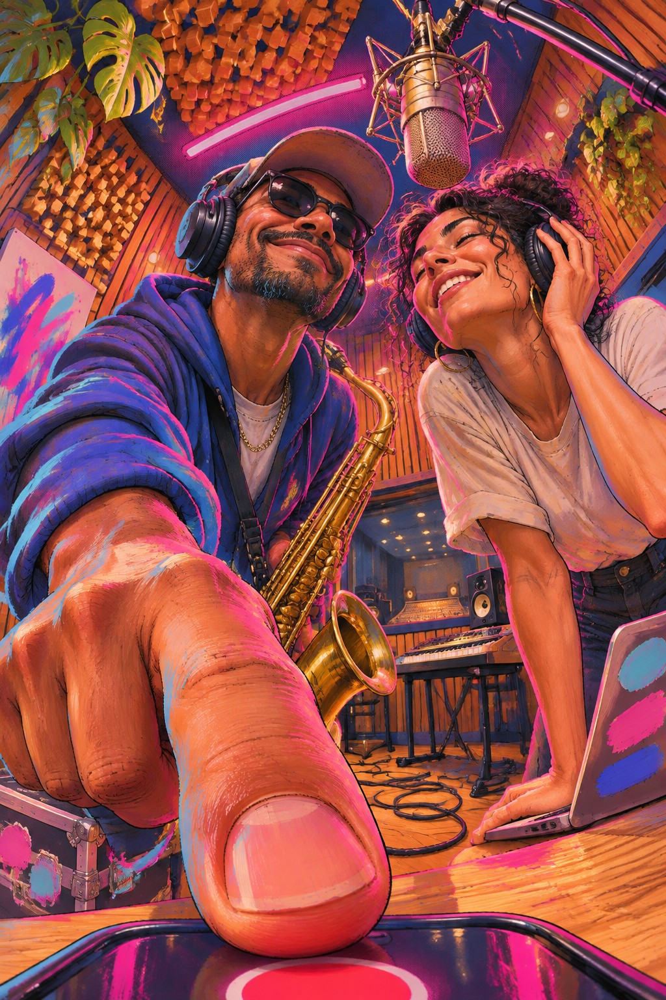
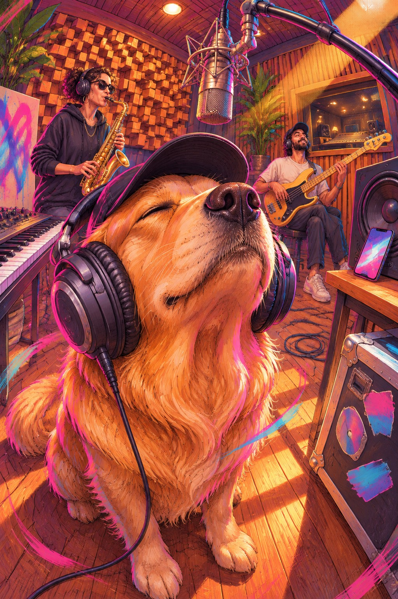
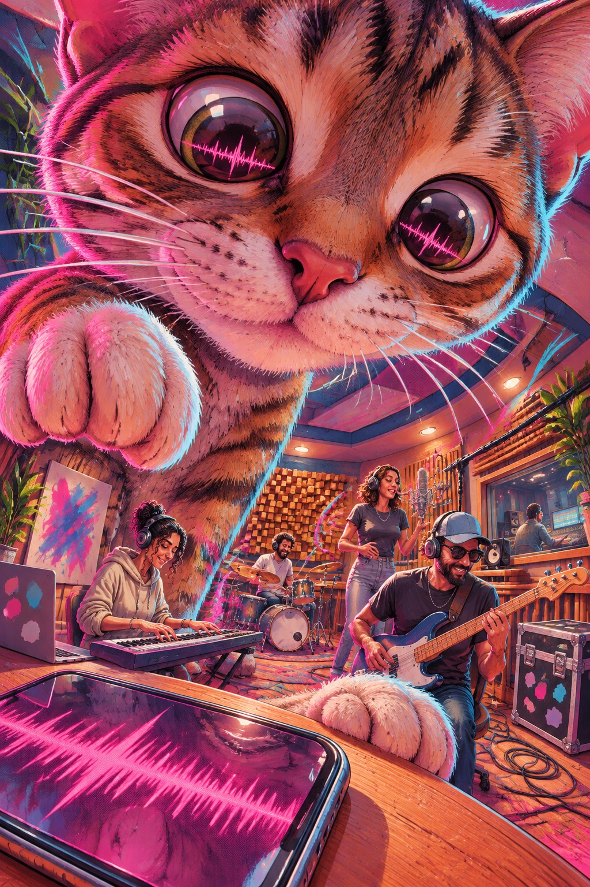
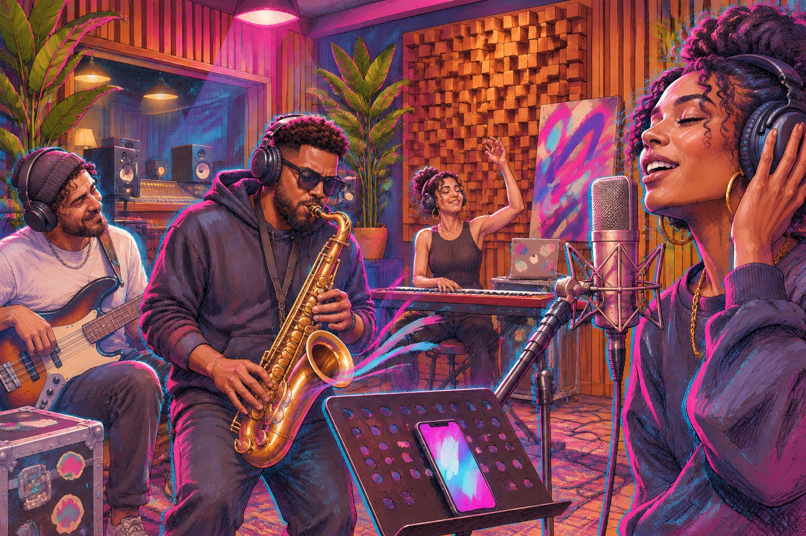

FYI · brand foundations · draft 1 · 23.11.2026 · for Ofir's decisions, nothing here is built yet
FYI is silent while the crew works and loud when the work meets the world. The art is always the world outside the phone. The interface is what is inside it.
Three jobs, and one occasional spice. Each has places where it lives and places where it never goes.
Serious creators at work, seen through a wide lens from where the phone was put down.
Lives in: first run, empty states, public pages, the case page. Never behind text.Halftone, two plates slightly off, a paper edge. The finish of things that get published.
Lives on: the event ticket, the poster, the formats, the mark. Never on controls.Stickers and marker lines, only as something a person did: a vote on a cover, a note on the cut.
Lives in: what people send. The product itself never decorates.A real animal with one or two real accessories, deadpan, behaving like a serious listener. A different one each time.
About one picture in six. No mascot, no name, never beside the AI.The art gets louder as the audience gets bigger. The working tool stays calm, so the one loud moment means something.
The depth comes from size, overlap and bending, never from blur. Sharp from front to back, so the picture can later be cut into planes for the site's depth effect.



Measured on today's drafts: they are warm pictures with pink on them, not yet neon. Dark tone is only 8 to 16% and no bare paper shows, so nothing glows and nothing reads as print. The next round fixes the light (pink comes from the phone screen) and adds a real print finish.
The art's palette, and the one change to the product's own colours.
It takes the event role from teal. Blue stays "you", violet stays AI, green stays live. Four of the art's five colours are already in the app; pink is the only new one.
The other option, pink replacing blue as "you", fails: white bubble text does not pass contrast, the thread becomes a wall of pink, and pink can no longer mark the public moment.| Pink #FF2E93 | Contrast | |
|---|---|---|
| on true black | 6.06 | passes |
| on the dark surface #1C1C1E | 4.91 | passes |
| white text on pink | 3.46 | fails for body text: use dark ink #1A000D (5.78) |
| beside the recording red #FF453A | 1.02 | cannot be told apart: never side by side |
A crew's poster prints in the crew's own colour. "Copper Hours" is copper. The brand lends its technique, not its pink.
Not an animal. The four people of the story and the room they work in.
| Who | Silhouette | Garment | Object |
|---|---|---|---|
| Maya, artist and producer | dark curls in a high bun | cobalt overshirt | headphones round her neck |
| Theo, video director | shaved head, short beard | navy work jacket | round clear glasses, camera strap |
| Ines, designer | black bob, blunt fringe | cream oversized T-shirt | a marker behind her ear |
| Kofi, shows and venues | short locs tied back | grey hoodie under a dark coat | keys at the belt, phone in hand |

About sixty parts exist in the product today; only six carry any brand. The audience has no screen at all. Three screens prove the system before anything else is touched.
The room behind real interface: one picture, one line, one button.
Proves level 2, and the lens.One loud object inside a calm tool. Print finish, pink, the moment it goes out.
Proves levels 0 and 3 side by side.The audience's end of the story. Today it is a thumbnail of 200 by 300 pixels.
Proves level 4, and the social side.Before them, free: the new colour tokens, the texture kit as four CSS classes, and replacing the doodle wallpaper (the one thing in today's product that reads childish). After them: the rest of first run, the rest of events, the public side, then the case page.